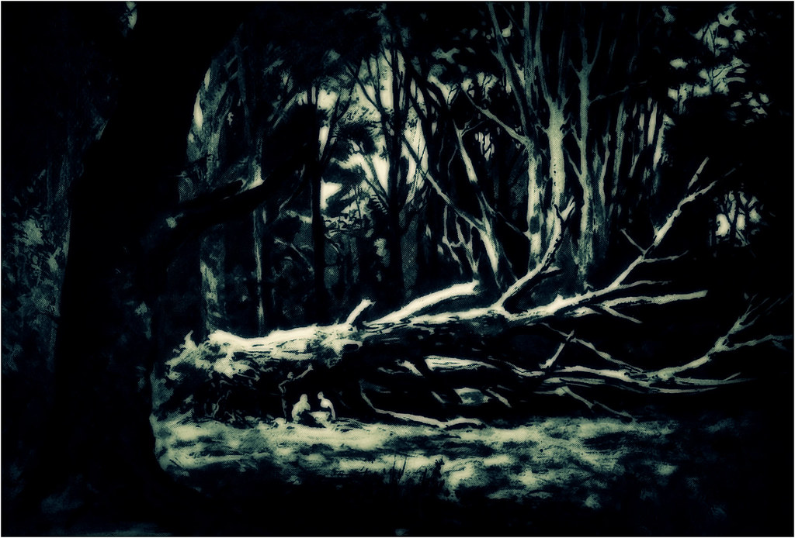

You make your way down the right path for some time you and feel like you've been walking forever. 20 minutes pass and you find yourself in an opening in a dark opening in the woods. You hear crying a few feet away from you. You stand there for a few seconds listening. The crying sounds feminine and you can hear notes of pain in the voice. You contemplate whether to investigate or to make 20 minute walk back to take the left part.

What do you decide to do?